Projetos da Entidade
Cultura, formação e solidariedade
Formação artística gratuita para todas as idades e ação social o ano inteiro.
Projeto 1
Curso de Fandango
O que é
A porta de entrada para a dança tradicional
O fandango reúne as danças de par enlaçado: marcha, vaneira, valsa, milonga, bugio, chamamé, rancheira, chote e polonaise. O curso é gratuito, vai do iniciante ao aperfeiçoamento e termina em um Baile de Formatura aberto ao público.
É a ação de formação mais antiga do Tropilha e a principal porta de entrada de novos integrantes para as Invernadas Artísticas. O curso inclui ainda a oficina de indumentária, sobre a pilcha, Traje de Honra do Rio Grande do Sul (Lei Estadual nº 8.813/1989).
Em números
17 edições desde 2015
Fotos
Bailes de formatura
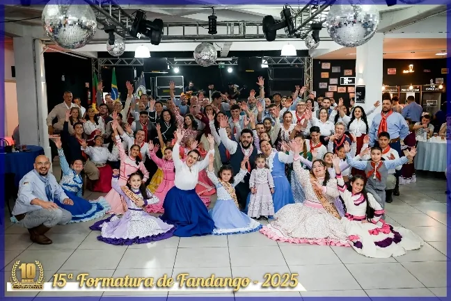
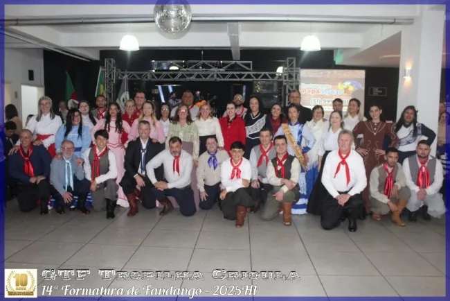
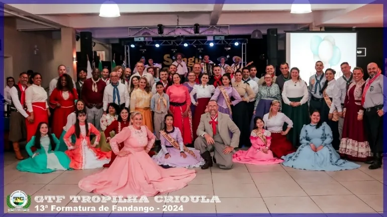

Histórico
Edições recentes
| Edição | Semestre | Destaques |
|---|---|---|
| 10ª | 2022/1 | Com o 18º BIMT, aos domingos |
| 11ª | 2023/1 | — |
| 12ª | 2024/1 | Com o Lions Clube Sapucaia Centro; formatura em 1º/6/2024 |
| 13ª | 2024/2 | ~95 inscritos e 60 formandos |
| 14ª | 2025/1 | ~90 inscritos e 50 formandos |
| 15ª | 2025/2 | 120+ inscritos e 56 formandos |
| 16ª | 2026/1 | 110+ inscritos e 64 formandos |
| 17ª | 2026/2 | 80+ inscritos; aulas aos domingos desde 9/8/2026; formatura em 31/10/2026 |
Em 2026 também foi realizado o Curso de Fandango Avançado (milonga, chote e chamamé), com início em 30/08/2026 e vagas gratuitas para os 10 primeiros casais de associados inscritos. Entre os instrutores das turmas estiveram Jeferson Ennes e Carol e Bruno Maciel.
Informações
Onde e como
- Local
- Salão da Igreja Luterana de Sapucaia do Sul, Av. Lúcio Bitencourt, 804 (parceira desde 2025)
- Custo
- Gratuito
- Formatura
- Baile aberto ao público, com ingressos para o jantar
- Inscrições
- As novas turmas são anunciadas nas redes. Informações pelo WhatsApp (51) 98088-1334
- Apoio no período
- PNAB/Aldir Blanc, Edital nº 14/2024 (Fandangueando em Sapucaia do Sul), com prestação de contas aprovada; Lions Clube Sapucaia Centro até 2024
Projeto 2
Invernadas Artísticas e Declamação
Danças tradicionais
Quatro invernadas, uma só família
As Invernadas Artísticas reúnem dançarinos em quatro grupos por faixa etária: Pré-Mirim, Mirim, Juvenil e Adulta. São cerca de 60 integrantes em ensaios semanais, de fevereiro a dezembro, no Salão da Igreja Luterana de Sapucaia do Sul.
Mais que ensinar a dança gaúcha, a prática coletiva desenvolve trabalho em equipe, disciplina, respeito, organização, autoestima e protagonismo. As invernadas se apresentam em eventos comunitários, rodeios, na Semana Farroupilha e em competições. A renovação do elenco é anual, com a Pré-Estreia da Invernada Juvenil.
A Invernada de Danças foi parcialmente apoiada pelo projeto Da Trempe ao Bailado (Edital SEDAC nº 22/2025) e tem apresentações previstas no Circuito Artístico (PNAB/Aldir Blanc).

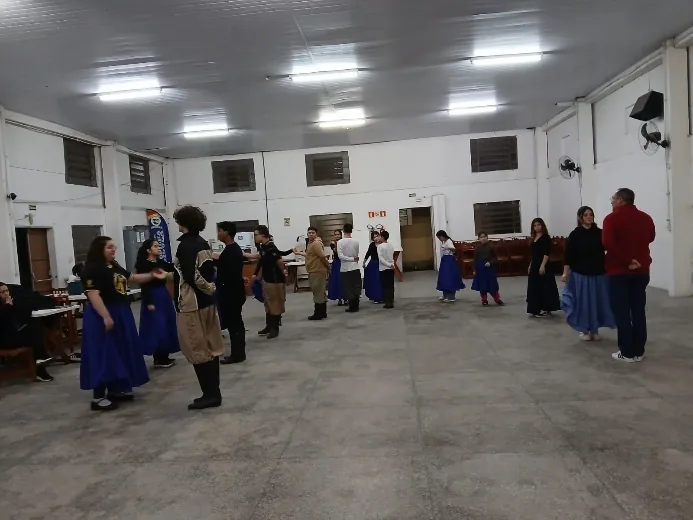
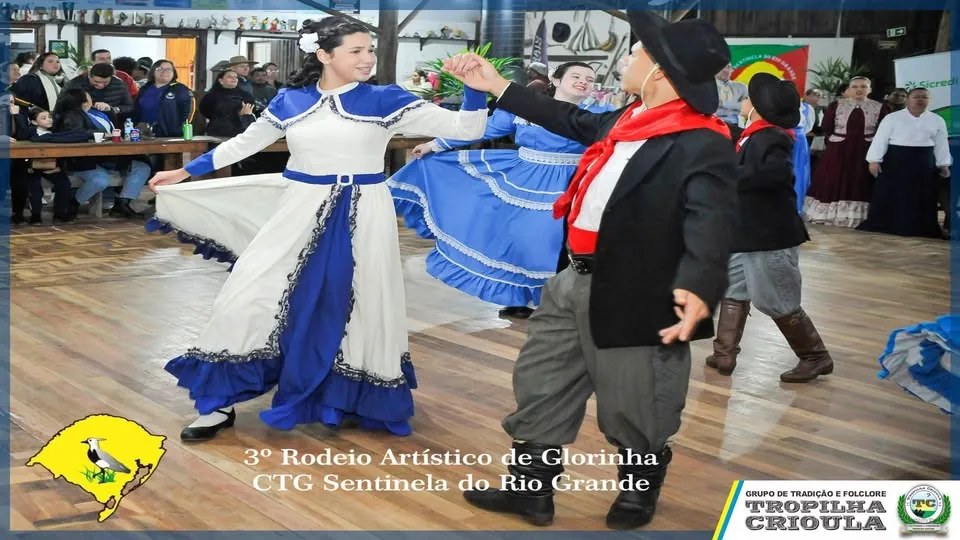
Declamação gaúcha
A arte da palavra falada
A Invernada de Declamação reúne cerca de 10 declamadores, gratuitamente, em encontros de estudo e ensaio. Além de preservar a tradição oral, a oficina estimula a leitura e desenvolve dicção, oratória, controle da ansiedade e postura, habilidades úteis na escola, no trabalho e na vida.
A invernada circula por eventos de poesia, como o 2º Acampamento da Declamação de Tapes (2025) e o Chama’s da Poesia, do CTG Chama Nativa, de Esteio (2025 e 2026). Em 2026, o Diretor Cultural Bruno Maciel representou o Tropilha na declamação até a 2ª Inter-Regional do ENART, em Bom Princípio.
Tropilha em Versos
Oficina de declamação, desde 2015
A oficina Tropilha em Versos teve edições em 2015, 2017 e 2018, com palestrantes convidados e participantes de várias regiões tradicionalistas. A 3ª edição, em 2018, foi a primeira apoiada por uma instituição: o Fundo Social Sicredi.
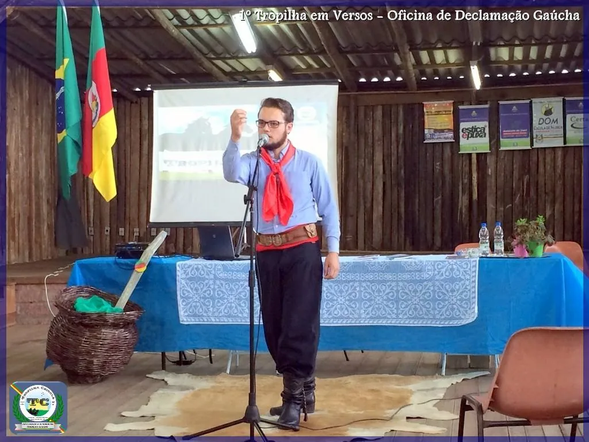

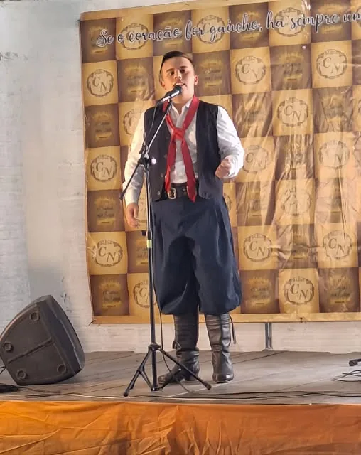
Conquistas
Representando o Tropilha
- ENART 2023: Campeão da 12ª Região Tradicionalista
- ENART 2024: Campeão Estadual de Melhor Acampamento
- ENART 2026: Inter-Regional na declamação
- Concurso Cultural da Semana Farroupilha de Sapucaia do Sul: campeão em 2025 e 2026
- 3º Rodeio Artístico do CTG Sentinela do Rio Grande, em Glorinha (2026)
Projeto 3
Outras ações culturais
Musical Tropilha da Canção
Oficinas gratuitas de gaita, violão gaúcho e canto, com instrumentos que permanecem na entidade.
Departamento Cultural
Prendas e peões que lideram as ações culturais e representam o Tropilha. Oficinas de chimarrão e indumentária.
Gestões Culturais
A cada gestão, prendas e peões são escolhidos para representar o Tropilha (2023/24 e 2025/26).
Indumentária e gastronomia
Palestra sobre a pilcha, Traje de Honra do RS (Lei nº 8.813/1989), e oficina de gastronomia gaúcha.
Esportes campeiros
Bocha, bolita, truco e jogo de 48, com canchas em construção e oficinas intergeracionais.
Integração Tradicionalista
Encontros e palestras para associados sobre o MTG e o papel de cada um, desde novembro de 2023.
Projeto 4
Galeto Solidário
O que é
A principal ação social recorrente
O Galeto Solidário é um almoço comunitário de galeto, prato típico gaúcho, que une cultura, mobilização e solidariedade. A cada edição, dezenas de voluntários cuidam do preparo à brasa, da venda e do atendimento.
Parte da renda é revertida a entidades assistenciais de Sapucaia do Sul, como a Cruz Vermelha, a ACAPASS e o Lar Abrigo Meu Refúgio. A primeira ação nesse formato, em 2021, foi em prol da ACAPASS. As edições mais recentes contam com a parceria do grupo União Solidária, que leva comida a moradores de rua da cidade.
Em 2026, o Galeto chegou à 11ª edição.
Em números
Ago/2024 a ago/2026

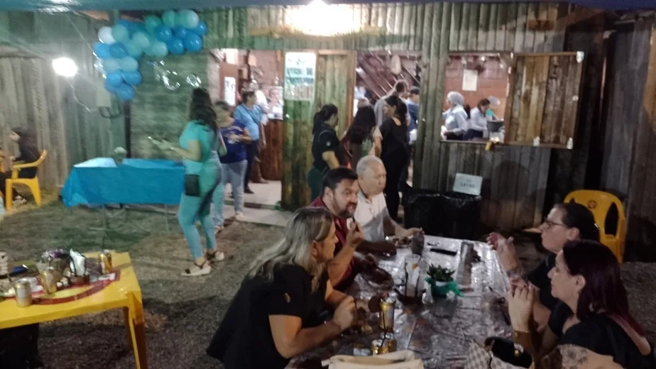
Informações
Como participar
- Frequência
- Semestral
- Retirada
- Galpão Campeiro do Tropilha, Parque Jayme Caetano Braum, ou Salão da Igreja Luterana, conforme a edição
- Reservas
- Pelo WhatsApp (51) 98088-1334
- Entidades apoiadas
- Cruz Vermelha, ACAPASS, Lar Abrigo Meu Refúgio e outras entidades do município
Projeto 5
Tropilanche
O que é
Solidariedade que vai ao encontro
O Tropilanche é uma ação de rua da Invernada Social: voluntários do Tropilha distribuem lanches (sanduíches e achocolatados) e marmitas quentes a pessoas em situação de rua de Sapucaia do Sul e região, levando também acolhimento e escuta.
A cada mês, a Invernada Social organiza a arrecadação, o preparo e a montagem dos lanches e marmitas e faz a distribuição, em geral à noite. No inverno, reforça as marmitas, porque comida quente também aquece.
A ação é feita com o apoio contínuo do grupo União Solidária de Sapucaia do Sul, que ajuda a destinar lanches e refeições. A finalidade está prevista no estatuto da entidade (art. 2º, inciso III, de assistência social).
Em números
Cada edição
Como ajudar
Doe e participe
Quer doar alimentos ou ajudar no preparo e na distribuição? Fale com a Invernada Social pelo WhatsApp (51) 98088-1334.
Projeto 6
Natal Solidário
O que é
Cultura gaúcha como gesto de cuidado
Todo ano, voluntários do Tropilha visitam idosos de Sapucaia do Sul acolhidos em instituições: as três unidades do Lar Arco-Íris e asilos do município. Levam apresentações de música, dança e declamação, confraternização e doações.
O objetivo é acolher e valorizar as pessoas idosas, combater a solidão no fim de ano e promover a convivência entre gerações por meio da cultura gaúcha.
Em números
Alcance

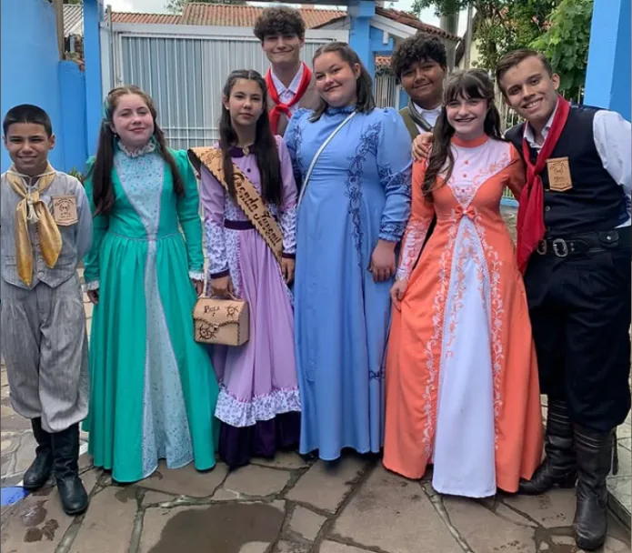
Projeto 7
Outras ações sociais
Campanha do Cobertor
Cada R$ 25 doados viram um cobertor popular para quem enfrenta o frio.
Oficina de brinquedos na ACAPASS
Tarde de brincadeiras gaúchas com crianças e adolescentes acolhidos na Casa de Passagem (2015, 2017, 2018 e 2024).
Tropilha nas Escolas
Vivências de danças, declamação e brincadeiras em escolas públicas e na APAE.
Cheias de 2024
Por cerca de 30 dias, arrecadação, marmitas e distribuição a famílias atingidas, em 7 municípios.
Quem atendemos
Públicos prioritários
- Crianças e adolescentesEscolas, ACAPASS, invernadas, fandango e música
- JovensFandango, Departamento Cultural, música e esportes
- Pessoas idosasNatal Solidário e convivência entre gerações
- Pessoas com deficiênciaParceria com a APAE: grupo “APAExonados pela Tradição”
- Vulnerabilidade socioeconômicaGaleto Solidário e atividades gratuitas
- Pessoas em situação de ruaTropilanche
- Atingidos por eventos climáticosCheias de 2024 e Campanha do Cobertor
- Comunidades periféricasEscolas públicas e bairros de Sapucaia do Sul
Nas escolas
Educação patrimonial
O Tropilha vai até a escola: oficinas de danças tradicionais, declamação, hora do conto, fantoches, brincadeiras e Vaca Parada, adaptadas a cada faixa etária. A ação é apoiada pelo projeto Sementes da Tradição (CTG na Escola), que deu ao Tropilha o 1º lugar entre as entidades da 12ª Região Tradicionalista.
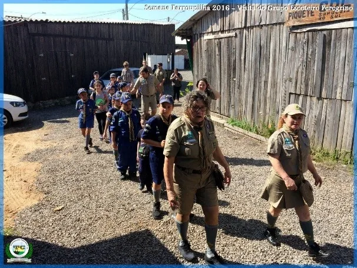
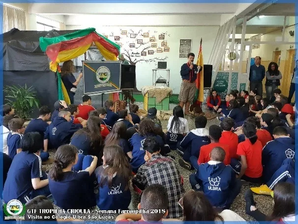
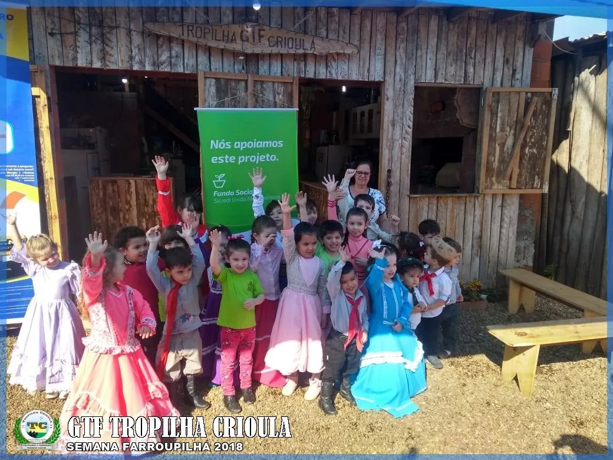
Seja voluntário
Fale com a gente
Informações, inscrições e voluntariado pelo WhatsApp (51) 98088-1334 ou pelo e-mail gtftropilhacrioula@gmail.com.